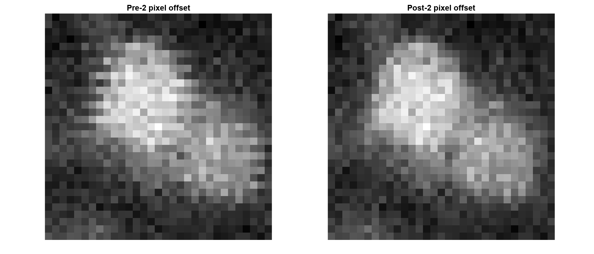
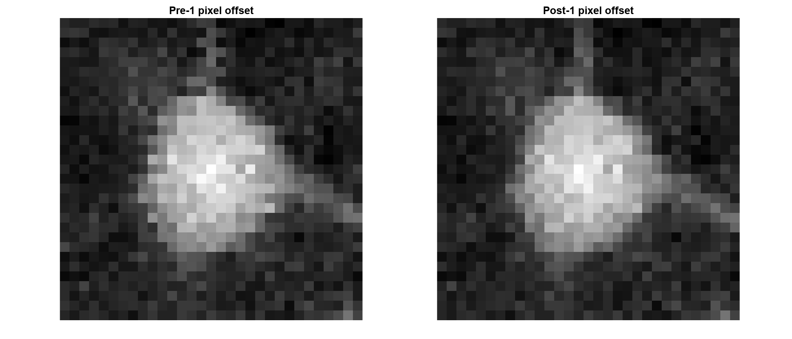
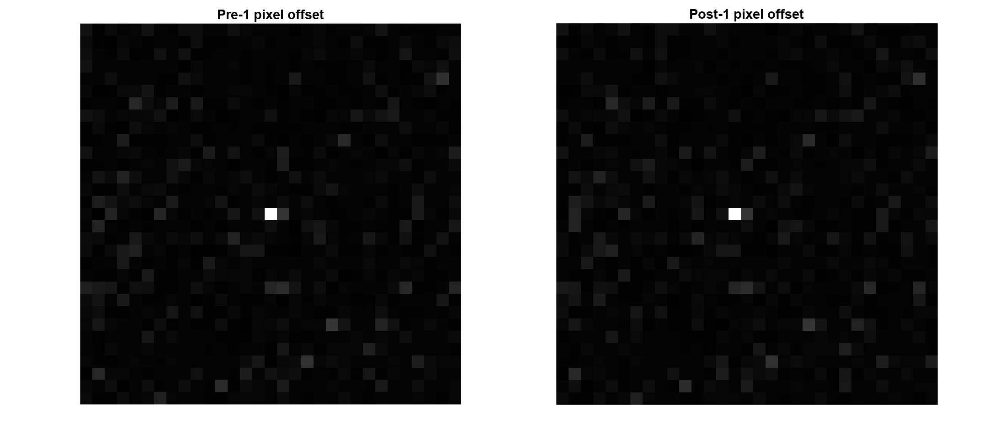

Pre-Processing#
Function for this step: convertScanImageTiffToVolume()
Utility functions for this step:
planeToH5: Quickly view a movie of any plane. read_H5_metadata: View metadata associated with an extracted file. get_center_indices: Get the Y,X index of a box of size pixels created around the center point of an image.
Before beginning pre-processing, follow setup steps in Getting Started to make sure the pipeline and dependencies are installed properly. After that, review Parameters to understand the general usage of each function going foreward.
See Troubleshooting for common issues you may encounter along the way.
Pre-processing LBM datasets consists of 2 main processing steps:
Assemble our images
reshape vertically concatenated strips into horizontally concatenated strips.
reorder our images into 3D time-series.
Correcting for scan-phase alignment inconsistencies
1. Re-Assemble Volumetric Time-Series#
Before processing starts, the raw scanimage output needs to be reconstructed to form a correctly-ordered time-series.
This is accomplished through the use of convertScanImageTiffToVolume().
Shown in the image below is a graphical representation of this reconstruction.
In its raw form (see A in the below figure), ScanImage tiff files are multipage tiffs - like a book.
Each page is one image, but it doesn’t look like an image:

If you were to open up a raw ScanImage .tiff file in ImageJ, you would see a very long, thin bar as is shown in A.
Each Z-Plane is written before moving onto the next timestep
z-plane 1 @ timepoint 1, z-plane 2 @ timepoint 1, z-plane 3 @ timepoint 1, etc.
Thus, another task convertScanImageTiffToVolume() accomplishes are reordering this tiff stack to be:
z-plane 1 @ timepont 1, z-plane 1 @ timepoint 2, etc ..
The output volumetric time-series has dimensions [Y,X,Z,T].
If the user chooses to split frames across multiple .tiff files, there will be multiple tiff files in ascending order of a suffix appended to the filename: _000N, where n=number of files chosen by the user.
Important
All output .tiff files for a single imaging session should be placed in the same directory. No other .tiff files should be in this directory. If this happens, an error will throw.
fix_scan_phase() is a very important parameter: it attempts to maximize the phase-correlation between each line (row) of each strip, as shown below.

This example shows that shifting every other row of pixels +2 (to the right) in our 2D reconstructed image will maximize the correlation between adjacent rows.
Newer versions (2019+) of ScanImage do this correction for you, but it won’t hurt. Before any image manipulations, the routine first checks if any lateral (x) shift will improve the correlation between adjacent rows and if not, will do nothing.
Important
Checking for a scan-phase offset correction is computationally cheap, so it is recommended to keep this to true.
Extraction Input#
First, we set up our directory paths. You can chain the output of one function to the input of another. Note the path names match Directory Structure:
parent_path = 'C:\Users\<username>\Documents\data\bi_hemisphere\'; %
raw_path = [ parent_path 'raw\']; % where our raw .tiffs go
extract_path = [ parent_path 'extracted\'];
mkdir(extract_path); mkdir(raw_path);
This is all you need to start processing your data. Actually, it’s quite more than you need.
raw_path is where your raw .tiff files will be stored and is the first parameter of convertScanImageTiffToVolume().
extract_path is where our data will be saved, and is the second parameter.
- Your raw and extract path can be in any folder you wish without worry of file-name conflicts.
- All future pipeline steps will automatically exclude these files as they will not have the characters _plane_ in the filename.
Note
Don’t put the characters _plane_ together in your raw/extracted filenames!
debug_flag is the next parameter, setting this to 1, ‘1’, or true will display the detected files that would be processed, and stop. This is helpful for controlling which files are processed.
overwrite, similar to diagnostic flag, can be set to 1, ‘1’, or true to enable overwriting any previously extracted data. Otherwise, a warning will show and no data will be saved.
Extraction Output#
Our data are now saved as a single h5 file separated by file and by plane. This storage format
makes it easy to motion correct each 3D planar time-series individually. We will be processing small patches of the total image,
roughly 20um in parallel, so attempting to process multiple time-series will drastically slow down NormCorre.
After successfully running convertScanImageTiffToVolume(), there will be a single .h5 file containing extracted data.
You can use h5info(h5path) in the MATLAB command window to reveal some helpful information about our data.
The following is an example structure of the HDF5 file at the outermost level:
h5info(extract_path, '/extraction')
Filename: 'C:\Users\<username>\MH184_both_6mm_FOV_150_600um_depth_410mW_9min_no_stimuli_00001_00001.h5'
Name: '/extraction'
Groups:
/plane_1
/plane_2
/plane_3
/plane_N
Datasets: []
Datatypes: []
Links: []
Attributes: []
We see here that our “parent” group has 3 subgroups corresponding to the number of raw .tiff files. Lets explore one of these “plane” subgroups:
We see that there are 30 datasets corresponding to each of our Z-planes, but no groups or attributes. That information is stored within each plane:
h5info(extract_path, '/plane_1')
struct with fields:
Filename: 'C:\Users\<username>\extracted\MH184_both_6mm_FOV_150_600um_depth_410mW_9min_no_stimuli_00001_00001.h5'
Name: 'plane_1'
Datatype: [1×1 struct]
Dataspace: [1×1 struct]
ChunkSize: [1165 1202 1]
FillValue: 0
Filters: [1×1 struct]
Attributes: [30×1 struct]
Groups: h5 files can be thought of like directories where a 3D time-series is self contained within its own folder (or group).
Attributes: Attributes are special “tags” attached to a group. This is where we store metadata associated with each group and dataset. The result of calling get_metadata(raw_path) (see ScanImage Metadata for more information about the magic behind the scenes here).
Evaluate output#
In your save_path, you will see a newly created figures folder.
In this folder is a close-up of the brightest image in every plane for a random frame. Each image shoes the neuron before and after scan-correction. This lets you compare planes, validate the correct scan-phase offset value (usually 1, 2 or 3 pixels).
Lets see the first z-plane:
{kind=link}
Lets see the tenth z-plane:
{kind=link}
So far so good, but as we approach the end-plane (by order, not by depth):
{kind=link}
You should do some checks to make sure data was written properly before continuing. There are a few convenience functions to view a movie provided in the pipeline. Below is an example:
%% View info about your newly extracted dataset
h5files = dir([extraction_path '*.h5']);
h5name = fullfile(extraction_path, h5files(1).name);
dataset_path = sprintf('/extraction/plane_%d', plane);
has_mc(h5name)
data = h5read( ...
h5name, ... % filename
dataset_path, ... % dataset location
[1, 1, frame_start], ... % start index for each dimension [X,Y,T]
[Inf, Inf, frame_end - frame_start + 1] ... % count for each dimension [X,Y,T]
);
figure;
for x = 1:size(data, 3)
imshow(data(236:408, 210:377, x), []);
title(sprintf('Frame %d', start_frame + x - 1));
end